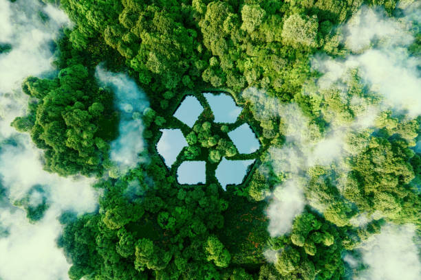
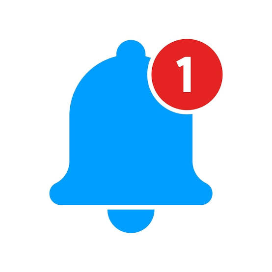

Recicle
Separe corretamente seus resíduos.
Recicla-me · Canoinhas
Moradores frequentemente descartam o lixo no dia errado por falta de informação. O Recicla-me resolve isso.
Receba um aviso no WhatsApp um dia antes da coleta no seu bairro. Simples, gratuito e fácil de usar.
O aviso chega um dia antes da coleta, direto no seu WhatsApp. Você escolhe quais tipos de coleta quer acompanhar: lixo comum, reciclável ou entulho.

Separe corretamente seus resíduos.
Veja os dias de coleta.

Receba informações antes da coleta.